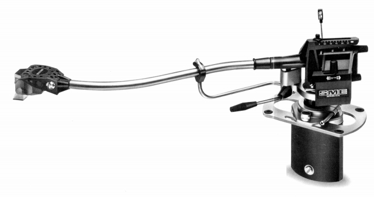
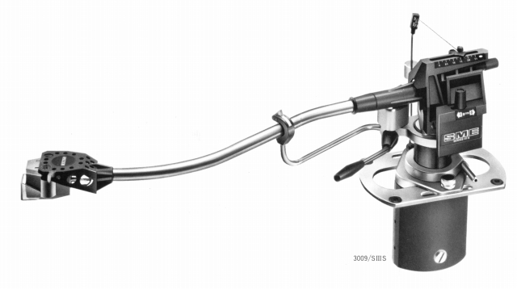
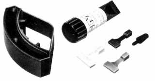
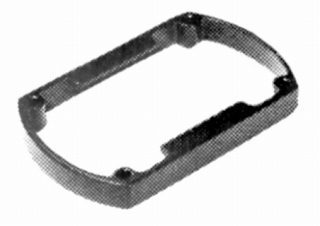
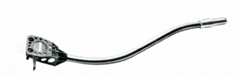

3009 Series�VS


■価格 53,000円
■型式 スタティックバランス型
■全長 �o
■実行長 229�o
■オーバー・ハング
■トラッキングエラー
■針圧範囲 0〜2.5g
0.25gステップ
■アーム高さ調整 60.3〜86.6�o（取付面〜アーム最高部）
■アームベース穴
■アンチスケートディバイス あり
■アームリフター あり
■ラテラルバランサー あり
■カートリッジ自重 最大12g
■線間容量
■発売 1979年
■販売終了 年頃
■備考 価格は1979年頃のもの
1993年には90,000円
スライドベース（移動範囲 ±12.7�o）装備。
3009
Series�Vからフルイドダンパー等を省略した簡易型。
針圧/インサイドフォースキャンセラーの調整がスライド式になっている。
高さのあるターンテーブル用にスペーサー(P1=2,200円
10�o厚）あり。
ヘッドシェル固定型なのでカートリッジ交換はキャリングアーム(CA1=12,000円)差し替えによる。
別売りフルイドダンパー（FD�VS=8,900円)あり。

（FD�VS)

(P-1)

(CA-1)
SMEのインデックスへ